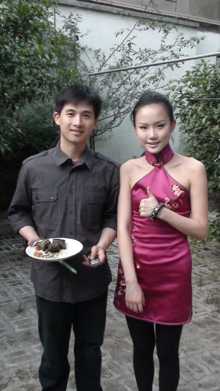
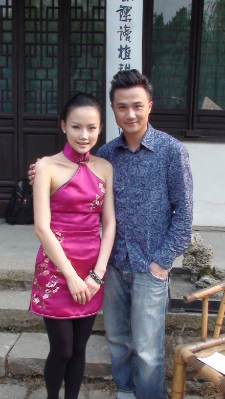
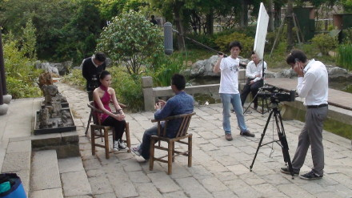
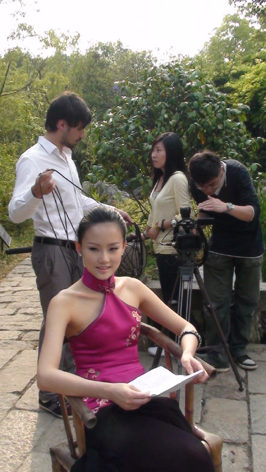

乘坐上海航空的朋友，你们会看到本期的奢华上海节目将由我带大家走进朱家角课植园
课植园是上海比较少见的经典中式园林，亭台楼榭，流水潺潺，一切都显的古朴典雅
到了晚上，一场如梦如幻的伟大爱情在这里惊艳登场
在世博会的时候，能够真正的来到园林中，好好的把心放下，去感受艺术的唯美爱情的浪漫，这也许是对奢华生活最美的诠释，看完演出已经很晚了，回市区的路上依然沉浸在实景牡丹亭所营造的绝美梦境中，也深深的被昆曲艺术所感动。。。
实景昆曲《牡丹亭》舞蹈指导是我们黄家的豆豆老师，主演是昆曲王子张军他同时也是制片人，音乐总监是谭盾老师，好强大的制作团队，我对他们每个人都进行了采访，真是受益匪浅，准确的说是我免费上了三堂宝贵的课
我有个外号叫豆豆，所以我也是黄豆豆

张军老师，我小的时候在电视里见过他，那个时候他是风组合里面成员

风和日暖，采访的时候拍不到脚，所以我可以不穿高跟鞋

